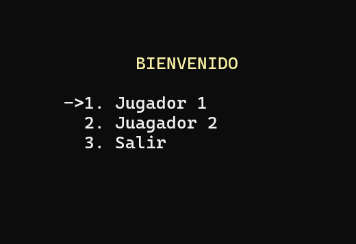
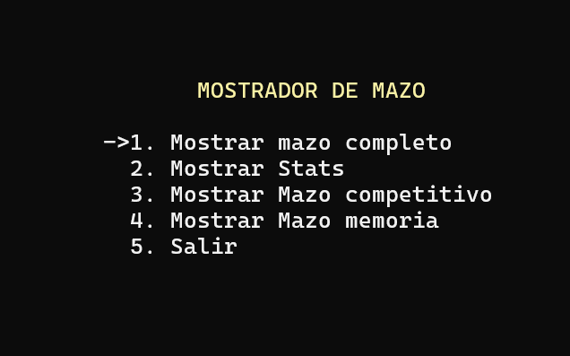
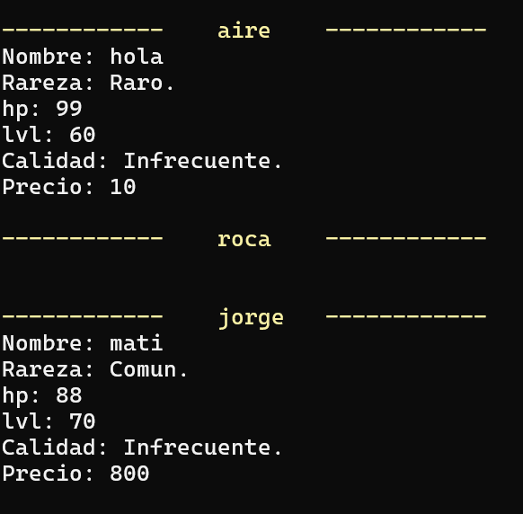
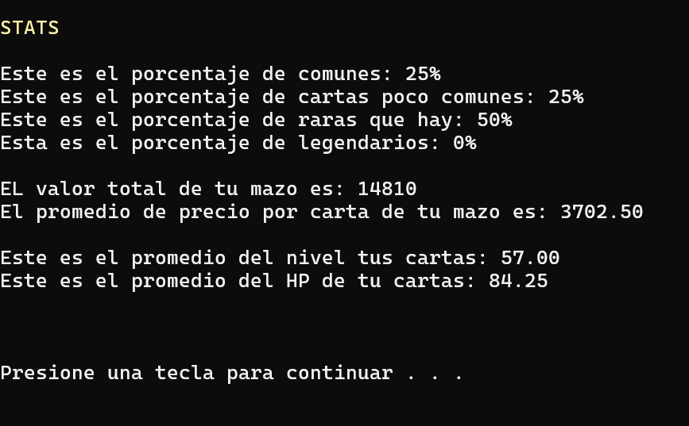

Inicio Proyectos 7 · Pokémon en C
Pokémon en C
Un gestor de mazos de cartas coleccionables en la consola: dos jugadores cargan, muestran, eliminan e intercambian cartas entre mazos, poniendo las estructuras de datos a trabajar de verdad.
Rol
Diseño y código en C — estructuras de datos aplicadas a un caso concreto.
Stack
C · listas · pilas · colas · árboles binarios · gotoxy
Datos
DatosJugador1.bin · DatosJugador2.bin — guardado binario
Estado
Repo público, aplicación de consola · github.com/matifl3/pokemon2 ↗
Qué gestiona este gestor
Cartas coleccionables estilo Pokémon, dos jugadores, varios mazos. El tema es el pretexto: lo que importa es manejarlo con las estructuras de datos de la materia, en C puro y en la consola.
Qué construí
- Carga, muestra, eliminación e intercambio de cartas entre mazos.
- Listas, pilas, colas y árboles binarios para manejar los datos.
- Estadísticas del mazo bajo demanda.
- Menú navegable dibujado con gotoxy.
- Todo guardado en archivos binarios entre sesiones.
Bajo el capó
- Librería propia de listas (liblistaO) usada por el programa principal.
- Dos juegos de datos de jugador independientes, persistidos como .bin.
- UI de consola con posicionamiento de cursor — sin librerías externas.
- Compilado y depurado con Code::Blocks.
Capturas
La consola, corriendo.



